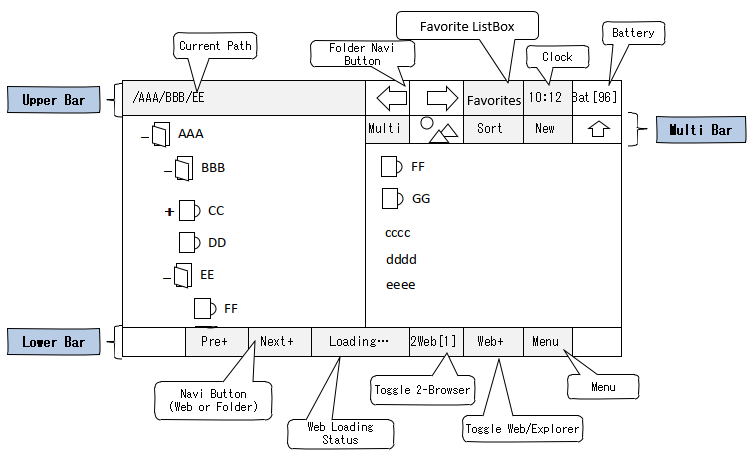
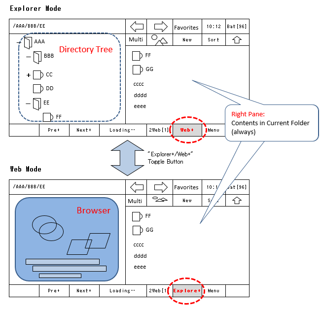

Page 1
GUI Design

Upper Tool Bar
- Current Path Label
Show Current Folder.
When using Home-Folder(see Explorer Function section) and current is below Home-Folder, path shown in Home-Folder below(upper path not shown).
By preference setting, you can always show path in Full Path.
(Long-Click):Can select Storage available
* Android4.3 below, cannot storage change(For external SD card, you need to select proper folder in Folder-Tree).
- Folder-Navi Button
Use this for Next/Previous navigation of folder.
* These buttons can hidden by Preference setting.In case so, use "Pre+" ,"Next+" Buttons on Lower Bar for Next/Previous navigation in folders(in Explorer Mode only).
* '+'post-fix in caption of Button shows that this button has another function in Long-Click.
(Simple Click): Next/Previous Navigation on Folders
(Long-Click):show History of folder access.
- Favorite ListBox(Shortcut Combo Box)
You can freely create shortcut to access Folder, File, Web Site and Phone Number in this combo list.
* For detail, see Common features/Favorite ListBox(Shortcut Combo Box) section.
- Clock and Battery Remaining
You can set their visible/invisible, color etc. in Preference.
Lower Button Bar
- "Pre+" ,"Next+" Buttons
Use this for 'Next/Previous' Navigation.
'Next/Previous' buttons on Lower Bar work only for Web browser by default.
When Folder-Navi button on Upper Bar is not shown by Preference,
this changes function for Explorer/Web Navigatin according to Explorer/Web Mode(below).
(Simple Click): Next/Previous Navigation
(Long-Click):show History of folder or Web access, according to Mode).
- Web Loading Status Label
When loading Web Page, this label colored Blue(default. Can changed in Preference).
(Simple Click): Stop loading.
(Long-Click):can set User-Agent of Browser(Mobile/Desktop), whether to show pictures on Web page, or Input URL manually.
- "2Web" Button
(Simple Click): Change to another browser in Two Browsers.
(Long-Click):Go to Web Side-by-Side Mode or return to Single mode.
- "Explorer+/Web+" Toggle Button
Change between Explorer-Mode and Web-Mode(below).
According to Mode, caption of button changes.
(Simple Click): Explorer/Web Mode change
(Long-Click): Screen Auto-Rotaion/Fix changes
* For App Screen Auto-Rotaion, need to set Auto-rotate for the device itself.
- "Menu" Button
(Simple Click): Show Menu for operations. Menu items differ in Explorer and Web Mode
(Long-Click):(Only Web mode)Hide/Show Upper or both Bar. (Only Web Side-by-Side Mode) "Swap Pages" or Browsers Array Direction change
(only when Landscape Screen).
>> Height of Lower Tool Bar can changed in Preference.
>> Android's Notification Bar(Status Bar) can set Show/Hide in Preference.
Explorer and Web Mode
For mode change, click "Explorer+/Web+" Toggle Button on Lower Bar.
Even if in Explorer-Mode, clicking Bookmark file, selecting item in Web History(or on shortcut combo)
or Selecting "Search on Web" from menu button changes mode to Web-Mode.

Multi Bar
Multi Bar is above File-List pane for operation with files.

- Multi-Select Button
For Multi-Select of file, Click this button and go to Multi-select Mode(At head of each file item, Check Box shown).
* With Long-Click on any line of File-List Pane, this menu item shown in Popup.
- Thumbnail Button
(Simple Click): Change between list view and thumbnail view of files.
(Long-Click): can Select Thumbnail Size.
* With Long-Click on any line of File-List Pane, Thumbnail Size menu shown in Popup.
- "Create New" Button
For creating new file or folder.
* With Long-Click on any line of File-List Pane, this menu item shown in Popup.
- Sort Button
Can sort by File Name(Asc/Desc), File Size(Asc/Desc), Update Date(Asc/Desc) or File Extension(Asc/Desc)
- Go to Upper Directory Button
Go to Upper-directory